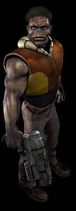
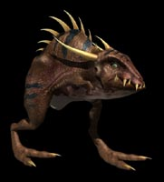
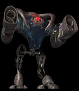

Characters
Zax

Zax grew up at the tail end of a 40-year depression. His lifelong ambition was to explore the universe and seek his fortune. Others had tried and failed of course, but Zax knew that he would be different..He had tasted poverty enough to know that he hated it. He had never known wealth, but its allure is all encompassing to him.So he worked long and hard to acquire his very own space ship. The one he finally found was a veteran of other failed explorer missions. It was old, beat up, and nothing to brag about - but it was for sale. He bought it, fixed it up the best he could.
Ten long years later, he was about to set down on what he thought was an uncharted and unclaimed planet in deep space. Scans of the planet returned nearly unbelievable levels of the ore he was seeking. He thought he had found what he had set out for....
Cave Dweller
 This
soft-shelled four-legged arachnid resides deep in the caverns. Though
very slow moving, they can kill enemy and prey alike with the venomous
spray shot from their mouths.
This
soft-shelled four-legged arachnid resides deep in the caverns. Though
very slow moving, they can kill enemy and prey alike with the venomous
spray shot from their mouths.
Jungle Creature

These creatures can usually be found in packs throughout the jungle regions. These speedy two-legged beasts use their powerful jaws to feast upon the native wild boar and any unsuspecting Korbo.
Higher Orb Slayer
 These
Bots are like their lower counterparts but with one exception. The Higher
Orb Slayer wields a more powerful orb that is fired from a cannon on its
right arm.
These
Bots are like their lower counterparts but with one exception. The Higher
Orb Slayer wields a more powerful orb that is fired from a cannon on its
right arm.
Lord Om Overseers

Lord Overseers are similar to Master Overseers but do not take part in the daily routines of the Korbo slave camps. Their job is to serve the needs of Om. Lords can be found mostly near the inner chambers of the facilities to which Om itself resides. They are darker in color than the Masters and pack a much more powerful projectile. A Companion Drone is usually found with these evil Bots.
Master Om Overseers
 These
highly intelligent Bots are the right hand of Om. Master Overseers control
other Bots and coordinate their activities in gathering resources for
the construction of facilities. Their other purpose involves the gathering
and enslaving of Korbo.Master Overseers are equipped with shields and
a powerful right gun.
These
highly intelligent Bots are the right hand of Om. Master Overseers control
other Bots and coordinate their activities in gathering resources for
the construction of facilities. Their other purpose involves the gathering
and enslaving of Korbo.Master Overseers are equipped with shields and
a powerful right gun.
Rogcoil
 These
Cyborg are lightly armed and are directly controlled by Om. Rogcoil often
patrol in groups. They can be seen around Korbo villages, herding the
Korbo to their doom. Although they are not heavily armored, they can still
put up a fight and are extremely effective at intimidating the Korbo.
These
Cyborg are lightly armed and are directly controlled by Om. Rogcoil often
patrol in groups. They can be seen around Korbo villages, herding the
Korbo to their doom. Although they are not heavily armored, they can still
put up a fight and are extremely effective at intimidating the Korbo.
Scorpio Flyer
 The
Scorpio Flyer is a larger Bot that hovers about a foot over the ground.
These Bots can be found near Om's strongholds to fend off large groups
of Korbo rebels. They are equipped with large lasers and an energy grenade
thrower.
The
Scorpio Flyer is a larger Bot that hovers about a foot over the ground.
These Bots can be found near Om's strongholds to fend off large groups
of Korbo rebels. They are equipped with large lasers and an energy grenade
thrower.